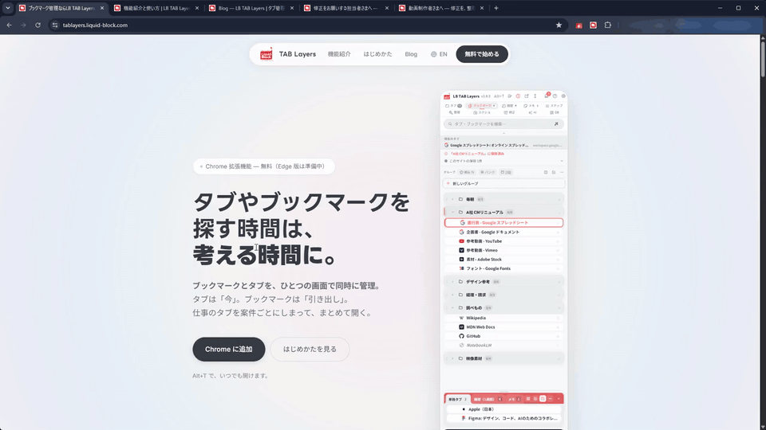
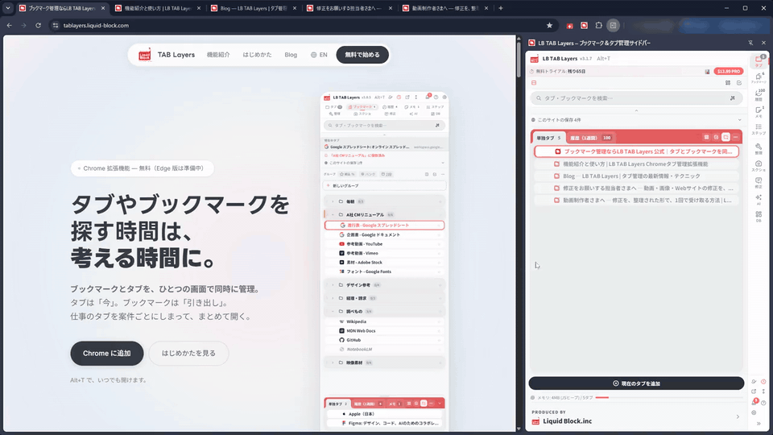
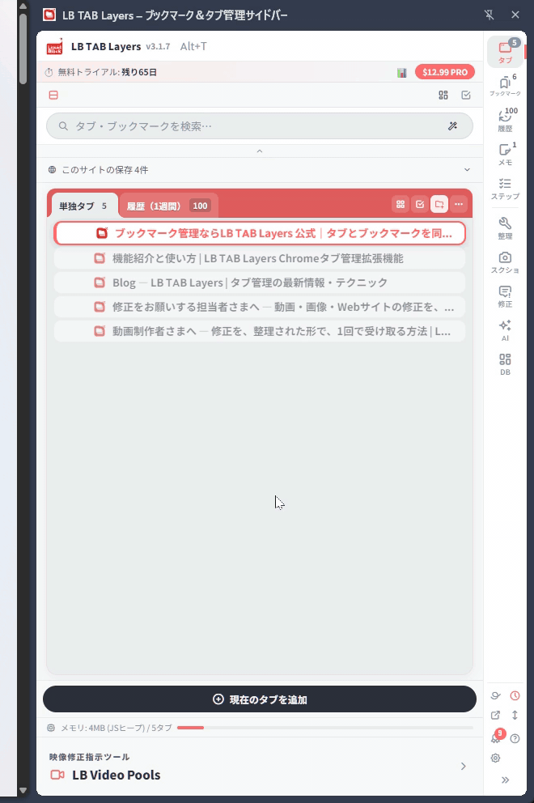
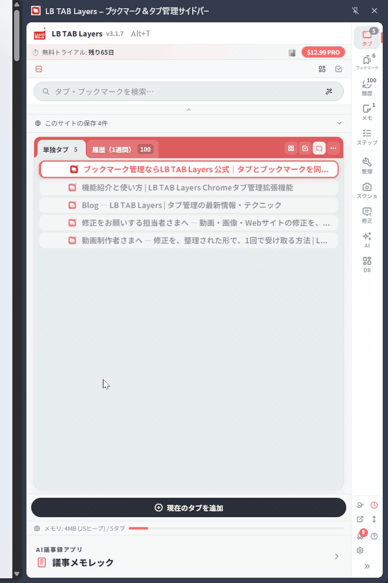
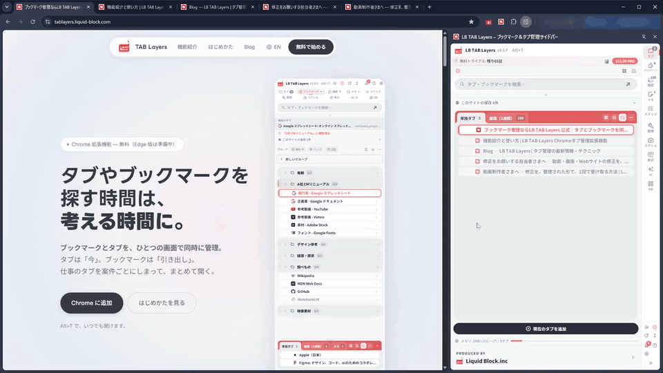
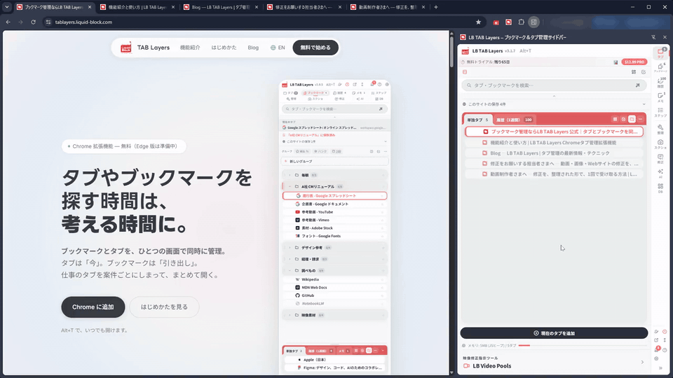

サイドパネルを開く
ブラウザの横に、パネルを出す
場所：Alt+T／拡張のアイコン
キーボードの Alt＋T で、サイドパネルが開きます。もう一度押すと閉じます。ツールバーの拡張のアイコンからも開けます。キーは、Chrome の拡張機能のショートカットの画面で変えられます。

ブラウザの横に、パネルを出す
場所：Alt+T／拡張のアイコン
キーボードの Alt＋T で、サイドパネルが開きます。もう一度押すと閉じます。ツールバーの拡張のアイコンからも開けます。キーは、Chrome の拡張機能のショートカットの画面で変えられます。

タブ・ブックマーク・履歴・メモ・ステップの 5 つの画面を切り替える。数のバッジつき
場所：右の列の上
パネルの右の列の上 5 つは「画面」です（タブ・ブックマーク・履歴・メモ・ステップ）。数字は、それぞれの中身の数です。その下は「道具」です（整理・スクショ・修正・AI・DB）。押すと、左の中身が切り替わります。

整理・スクショ・修正・AI・DB（ダッシュボード）を開く
場所：右の列の中ほど
右の列の中ほどには、道具が並びます。整理・スクショ・修正・AI・DB（ダッシュボード）を、押して開けます。
今見ているページの名前とサイトを出す。押すと、そのタブへ移る
場所：パネルの上
パネルの上に、今見ているページの名前とサイトが出ます。押すと、そのタブに移ります。
「切り分け（タブとブックマークを別の画面で）」と「統合（上下に並べる）」を切り替える
場所：上のボタン／設定 › 見た目
「切り分け」は、タブとブックマークを別々の画面で広く見る形です。「統合」は、上にグループ、下に開いているタブを並べて、1 つの画面で見る形です。パネルの上のボタン、または、設定 › 見た目 › 画面の並び で切り替えます。

右の列を、上の横並びにする。列を、アイコンだけに縮める
場所：設定 › 見た目／列の下の「縮める」
右の列の下の「縮める」で、アイコンだけの細い列になります。列を上に横並びにしたいときは、設定 › 見た目 › 画面の並び › モード切替の位置 で選びます。

自動・標準・コンパクトを切り替える
場所：右の列の下
右の列の下の「表示の密度」を押すたびに、自動・標準・コンパクトが切り替わります。自動は、画面の高さが小さいときだけコンパクトになります。

上の検索などの段を、たたむ
場所：検索の下の細い帯
検索の欄の下の細い帯を押すと、上の検索などの段をたためます。一覧を広く使いたいときに便利です。もう一度押すと、戻ります。
パネルを、別のウィンドウ・新しいタブで開く。ダッシュボードを開く
場所：右の列の下
右の列の下の「表示方法を切り替え」から、別のウィンドウで開く・新しいタブで開く・ダッシュボードを開く、を選べます。

ページの上に重ねて出す。位置・幅・ボタンの場所・起動時の出しかたを選べる
場所：設定 › 使い方 › 表示のしかた
設定 › 使い方 › 表示のしかた で「オーバーレイ」を選ぶと、パネルがページの上に重なって出ます。位置（左・右）、幅、ボタンの場所、起動時の出しかたも選べます。PRO の機能です（お試し期間中は使えます）。

Web ページの端に、アイコンだけの細い列を出す。ピンと、開いているタブに、すぐ移れる
場所：設定 › 見た目
設定 › 見た目 › 画面の並び で「ページの端に、ファビコンだけの細い列を出す」をオンにすると、Web ページの端に細い列が出ます。≫ でパネルを開き、アイコンでピンや開いているタブに移れます。
割り当てたキーを、上に出す。押すと、変更の画面へ
場所：パネルの上「Alt+T」
パネルの上に、パネルを開くキー（はじめは Alt+T）が出ています。押すと、Chrome のショートカットの設定の画面が開き、好きなキーに変えられます。
開いているタブの数と、使っているメモリの目安を出す
場所：パネルの下
パネルの下に、開いているタブの数と、使っているメモリの目安が出ます。タブが増えすぎていないかの目安になります。
LB TAB Layers は、Chrome に無料で追加できます。入れたら、Alt+T で、いつでも開けます。
Chrome に無料で追加